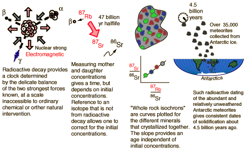

Age of the Earth
To the intriguing question "How old is the Earth?" we can of course only provide models and model calculations based on the best data we can get. While there are numerous natural processes that can serve as clocks, there are also many natural processes that can reset or scramble these time-dependent processes and introduce uncertainties. To try to set a reasonable bound on the age, we could presume that the Earth formed at the same time as the rest of the solar system. If the small masses that become meteorites are part of that system, then a measurement of the solidification time of those meteorites gives an estimate of the age of the Earth. The following illustration points to a scenario for developing such an age estimate.

Some of the progress in finding very old samples of rock on the Earth are summarized in the following comments.
"The oldest rocks on earth that have been dated thus far include 3.4 billion year old granites from the Barberton Mountain Land of South Africa, 3.7 billion year old granites of southwestern Greenland, ..." Levin, 1983
But later in 1983: "Geologists working in the mountains of western Australia have discovered grains of rock that are 4.1 to 4.2 billion years old, by far the oldest ever found on the Earth" This dating was done on grains of zircon, a mineral so stable that it can retain its identity through volcanic activity, weathering, and sedimentation. It is a compound of zirconium, silicon and oxygen which in its colorless form is used to make brilliant gems. Samples more than 3.5 billion years old have been found in eight or more locations, including Wisconsin, Minnesota, South Africa, Greenland, and Labrador.
Older ages in the neighborhood of 4.5 billion years are obtained from meteoritic samples. The graph below follows the treatment of Krane of Rb-Sr studies of meteorite samples from Wetherill in order to show the nature of the calculation of age from isochrons.
If you had 100% pure parent element when you began a dating process, then radioactive dating would be extremely reliable since the radioactive half-life of a given isotope is quite independent of any natural forces save direct collision-type interactions with the nucleus. Considering the relative scale of nuclei and atoms, nuclei are so remote from the outer edge of the atoms that no environmental factors affect them. However, there are two obvious problems with radioactive dating for geological purposes: 1) uncertainty about the composition of the original sample and 2) possible losses of material during the time span of the decay.
The rubidium/strontium dating method deals with both of those difficulties by using the non-radioactive isotope strontium-86 as a comparison standard. The relative amounts of strontium-87 and -86 are determined with great precision and the fact that the data fits a straight line is a strong argument that none of the constituents was lost from the mix during the aging process.
The 4.5 billion year age for the earth is consistent with the results of the potassium/argon and uranium/lead processes. Similar results are also obtained from the study of spontaneous fission events from uranium-238 and plutonium-244.
One of the standard references for modeling the age of the Earth is G. Brent Dalrymple, The Age of the Earth, Stanford University Press, 1991.
|